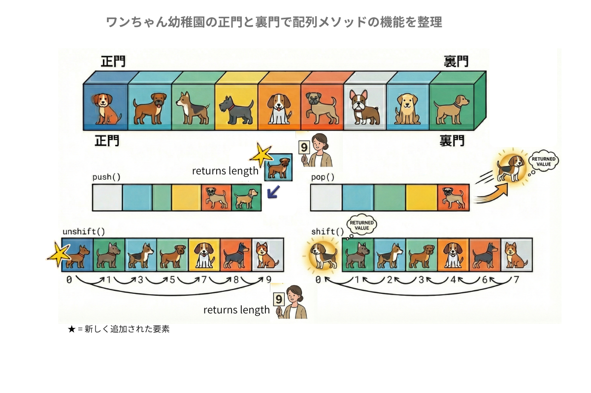

プログラミングの学びはじめに躓きやすい５選
🐢🐢理系じゃない私が🐌🐌🐌並みの速度で学び、気づいたこと🐢🐢
①日常言語とのイメージギャップ
②英語問題
🔟addTen･･･え？10を足せばいいんだね？足し算やん！
🚀meaningOfLife(42)･･･ジョークなのか本気なのかで混乱。
③検索の仕方 Google！あなただったのか。
🔍ネット検索はGoogleが鉄則。ブラウザが違うと検索結果も変わってくる。
④独自の世界観-1- 複数の時間･・･TDDの例
⑤独自の世界観-1- 配列メソッドの例
